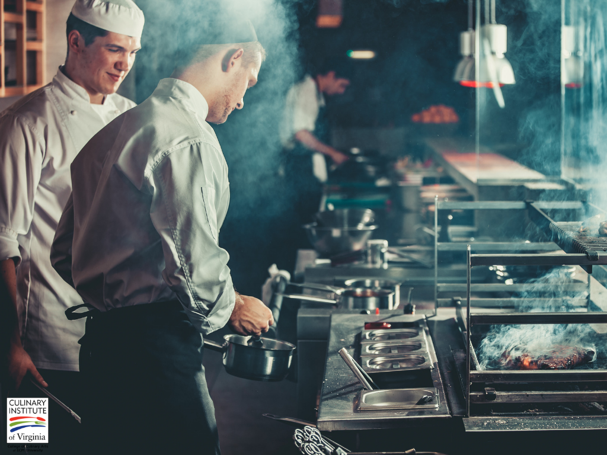

Shaping the Featute of food.
Our goal is to change what you eat
Changing how you eat is just a means to an end.

Improving quality of food
We are committed to nurturing a neutral platform and are helping food establishments maintain high standards through Hyperpure. Food
Hygiene Ratings is a coveted mark of quality among our restaurant partners.
Boosting accessibility for customers
Our delivery service is reaching more and more cities. We are actively growing our services - table reservation.
Focusing on affordability
The benefits of providing an interesting choice are embodied by the success of Zomato Gold. We are leaving no stone unturned when it comes to
making food more affordable without compromising on the profitability of a given restaurant.